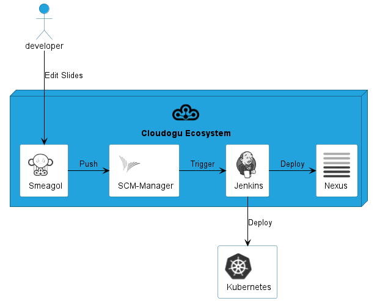

Welcome to the guide on PlantUML's official Standard Library (stdlib). Here, we delve into this integral resource that is now included in all official releases of PlantUML, facilitating a richer diagram creation experience. The library borrows its file inclusion convention from the "C standard library", a well-established protocol in the programming world. Standard Library Overview The Standard Library is a repository of files and resources, constantly updated to enhance your PlantUML experience. It forms the backbone of PlantUML, offering a range of functionalities and features to explore. Contribution from the Community A significant portion of the library's contents are generously provided by third-party contributors. We extend our heartfelt gratitude to them for their invaluable contributions that have played a pivotal role in enriching the library. We encourage users to delve into the abundant resources the Standard Library offers, to not only enhance their diagram crafting experience but also possibly contribute and be a part of this collaborative endeavor. You can list standard library folders using the special diagram: 🎉 Copied!
 | |
It is also possible to use the command line java -jar plantuml.jar -stdlib to display the same list. Finally, you can extract the full standard library sources using java -jar plantuml.jar -extractstdlib. All files will be extracted in the folder stdlib. Sources used to build official PlantUML releases are hosted here https://github.com/plantuml/plantuml-stdlib. You can create Pull Request to update or add some library if you find it relevant. This repository contains ArchiMate PlantUML macros and other includes for creating Archimate Diagrams easily and consistantly. 🎉 Copied!
| @startuml
!include <archimate/Archimate>
title Archimate Sample - Internet Browser
' Elements
Business_Object(businessObject, "A Business Object")
Business_Process(someBusinessProcess,"Some Business Process")
Business_Service(itSupportService, "IT Support for Business (Application Service)")
Application_DataObject(dataObject, "Web Page Data \n 'on the fly'")
Application_Function(webpageBehaviour, "Web page behaviour")
Application_Component(ActivePartWebPage, "Active Part of the web page \n 'on the fly'")
Technology_Artifact(inMemoryItem,"in memory / 'on the fly' html/javascript")
Technology_Service(internetBrowser, "Internet Browser Generic & Plugin")
Technology_Service(internetBrowserPlugin, "Some Internet Browser Plugin")
Technology_Service(webServer, "Some web server")
'Relationships
Rel_Flow_Left(someBusinessProcess, businessObject, "")
Rel_Serving_Up(itSupportService, someBusinessProcess, "")
Rel_Specialization_Up(webpageBehaviour, itSupportService, "")
Rel_Flow_Right(dataObject, webpageBehaviour, "")
Rel_Specialization_Up(dataObject, businessObject, "")
Rel_Assignment_Left(ActivePartWebPage, webpageBehaviour, "")
Rel_Specialization_Up(inMemoryItem, dataObject, "")
Rel_Realization_Up(inMemoryItem, ActivePartWebPage, "")
Rel_Specialization_Right(inMemoryItem,internetBrowser, "")
Rel_Serving_Up(internetBrowser, webpageBehaviour, "")
Rel_Serving_Up(internetBrowserPlugin, webpageBehaviour, "")
Rel_Aggregation_Right(internetBrowser, internetBrowserPlugin, "")
Rel_Access_Up(webServer, inMemoryItem, "")
Rel_Serving_Up(webServer, internetBrowser, "")
@enduml
 |
List possible sprites You can list all possible sprites for Archimate using the following diagram: 🎉 Copied!
| @startuml
listsprite
@enduml
|
The Amazon Labs AWS library provides PlantUML sprites, macros, and other includes for Amazon Web Services (AWS) services and resources. Used to create PlantUML diagrams with AWS components. All elements are generated from the official AWS Architecture Icons and when combined with PlantUML and the C4 model, are a great way to communicate your design, deployment, and topology as code.
@startuml
!include <awslib/AWSCommon>
!include <awslib/InternetOfThings/IoTRule>
!include <awslib/Analytics/KinesisDataStreams>
!include <awslib/ApplicationIntegration/SimpleQueueService>
left to right direction
agent "Published Event" as event #fff
IoTRule(iotRule, "Action Error Rule", "error if Kinesis fails")
KinesisDataStreams(eventStream, "IoT Events", "2 shards")
SimpleQueueService(errorQueue, "Rule Error Queue", "failed Rule actions")
event --> iotRule : JSON message
iotRule --> eventStream : messages
iotRule --> errorQueue : Failed action message
@enduml
The Azure library consists of Microsoft Azure icons. Use it by including the file that contains the sprite, eg: !include <azure/Analytics/AzureEventHub>. When imported, you can use the sprite as normally you would, using <$sprite_name>. You may also include the AzureCommon.puml file, eg: !include <azure/AzureCommon>, which contains helper macros defined. With the AzureCommon.puml imported, you can use the NAME_OF_SPRITE(parameters...) macro. Example of usage: 🎉 Copied!
| @startuml
!include <azure/AzureCommon>
!include <azure/Analytics/AzureEventHub>
!include <azure/Analytics/AzureStreamAnalyticsJob>
!include <azure/Databases/AzureCosmosDb>
left to right direction
agent "Device Simulator" as devices #fff
AzureEventHub(fareDataEventHub, "Fare Data", "PK: Medallion HackLicense VendorId; 3 TUs")
AzureEventHub(tripDataEventHub, "Trip Data", "PK: Medallion HackLicense VendorId; 3 TUs")
AzureStreamAnalyticsJob(streamAnalytics, "Stream Processing", "6 SUs")
AzureCosmosDb(outputCosmosDb, "Output Database", "1,000 RUs")
devices --> fareDataEventHub
devices --> tripDataEventHub
fareDataEventHub --> streamAnalytics
tripDataEventHub --> streamAnalytics
streamAnalytics --> outputCosmosDb
@enduml
|
🎉 Copied!
| @startuml
!include <C4/C4_Container>
Person(personAlias, "Label", "Optional Description")
Container(containerAlias, "Label", "Technology", "Optional Description")
System(systemAlias, "Label", "Optional Description")
System_Ext(extSystemAlias, "Label", "Optional Description")
Rel(personAlias, containerAlias, "Label", "Optional Technology")
Rel_U(systemAlias, extSystemAlias, "Label", "Optional Technology")
@enduml
|
This repository contains PlantUML sprites generated from Cloudinsight icons, which can easily be used in PlantUML diagrams for nice visual representation of popular technologies. 🎉 Copied!
| @startuml
!include <cloudinsight/tomcat>
!include <cloudinsight/kafka>
!include <cloudinsight/java>
!include <cloudinsight/cassandra>
title Cloudinsight sprites example
skinparam monochrome true
rectangle "<$tomcat>\nwebapp" as webapp
queue "<$kafka>" as kafka
rectangle "<$java>\ndaemon" as daemon
database "<$cassandra>" as cassandra
webapp -> kafka
kafka -> daemon
daemon --> cassandra
@enduml
|
The Cloudogu library provides PlantUML sprites, macros, and other includes for Cloudogu services and resources. 🎉 Copied!
| @startuml
!include <cloudogu/common>
!include <cloudogu/dogus/jenkins>
!include <cloudogu/dogus/cloudogu>
!include <cloudogu/dogus/scm>
!include <cloudogu/dogus/smeagol>
!include <cloudogu/dogus/nexus>
!include <cloudogu/tools/k8s>
node "Cloudogu Ecosystem" <<$cloudogu>> {
DOGU_JENKINS(jenkins, Jenkins) #ffffff
DOGU_SCM(scm, SCM-Manager) #ffffff
DOGU_SMEAGOL(smeagol, Smeagol) #ffffff
DOGU_NEXUS(nexus,Nexus) #ffffff
}
TOOL_K8S(k8s, Kubernetes) #ffffff
actor developer
developer --> smeagol : "Edit Slides"
smeagol -> scm : Push
scm -> jenkins : Trigger
jenkins -> nexus : Deploy
jenkins --> k8s : Deploy
@enduml
 |
All cloudogu sprites See all possible cloudogu sprites on plantuml-cloudogu-sprites. The Elastic library consists of Elastic icons. It is similar in use to the AWS and Azure libraries (it used the same tool to create them). Use it by including the file that contains the sprite, eg: !include elastic/elastic_search/elastic_search>. When imported, you can use the sprite as normally you would, using <$sprite_name>. You may also include the common.puml file, eg: !include <elastic/common>, which contains helper macros defined. With the common.puml imported, you can use the NAME//OF//SPRITE(parameters...) macro. Example of usage: 🎉 Copied!
| @startuml
!include <elastic/common>
!include <elastic/elasticsearch/elasticsearch>
!include <elastic/logstash/logstash>
!include <elastic/kibana/kibana>
ELASTICSEARCH(ElasticSearch, "Search and Analyze",database)
LOGSTASH(Logstash, "Parse and Transform",node)
KIBANA(Kibana, "Visualize",agent)
Logstash -right-> ElasticSearch: Transformed Data
ElasticSearch -right-> Kibana: Data to View
@enduml
|
All Elastic Sprite Set 🎉 Copied!
| @startuml
'Adapted from https://github.com/Crashedmind/PlantUML-Elastic-icons/blob/master/All.puml
'Elastic stuff here
'================================
!include <elastic/common>
!include <elastic/apm/apm>
!include <elastic/app_search/app_search>
!include <elastic/beats/beats>
!include <elastic/cloud/cloud>
!include <elastic/cloud_in_kubernetes/cloud_in_kubernetes>
!include <elastic/code_search/code_search>
!include <elastic/ece/ece>
!include <elastic/eck/eck>
' Beware of the difference between Crashedmind and plantuml-stdlib version: with '_' usage!
!include <elastic/elasticsearch/elasticsearch>
!include <elastic/endpoint/endpoint>
!include <elastic/enterprise_search/enterprise_search>
!include <elastic/kibana/kibana>
!include <elastic/logging/logging>
!include <elastic/logstash/logstash>
!include <elastic/maps/maps>
!include <elastic/metrics/metrics>
!include <elastic/siem/siem>
!include <elastic/site_search/site_search>
!include <elastic/stack/stack>
!include <elastic/uptime/uptime>
skinparam agentBackgroundColor White
APM(apm)
APP_SEARCH(app_search)
BEATS(beats)
CLOUD(cloud)
CLOUD_IN_KUBERNETES(cloud_in_kubernetes)
CODE_SEARCH(code_search)
ECE(ece)
ECK(eck)
ELASTICSEARCH(elastic_search)
ENDPOINT(endpoint)
ENTERPRISE_SEARCH(enterprise_search)
KIBANA(kibana)
LOGGING(logging)
LOGSTASH(logstash)
MAPS(maps)
METRICS(metrics)
SIEM(siem)
SITE_SEARCH(site_search)
STACK(stack)
UPTIME(uptime)
@enduml
|
This library consists of a free Material style icons from Google and other artists. Use it by including the file that contains the sprite, eg: !include <material/ma_folder_move>. When imported, you can use the sprite as normally you would, using <$ma_sprite_name>. Notice that this library requires an ma_ prefix on sprites names, this is to avoid clash of names if multiple sprites have the same name on different libraries. You may also include the common.puml file, eg: !include <material/common>, which contains helper macros defined. With the common.puml imported, you can use the MA_NAME_OF_SPRITE(parameters...) macro, note again the use of the prefix MA_. Example of usage: 🎉 Copied!
| @startuml
!include <material/common>
' To import the sprite file you DON'T need to place a prefix!
!include <material/folder_move>
MA_FOLDER_MOVE(Red, 1, dir, rectangle, "A label")
@enduml
|
Notes: When mixing sprites macros with other elements you may get a syntax error if, for example, trying to add a rectangle along with classes. In those cases, add { and } after the macro to create the empty rectangle. Example of usage: 🎉 Copied!
| @startuml
!include <material/common>
' To import the sprite file you DON'T need to place a prefix!
!include <material/folder_move>
MA_FOLDER_MOVE(Red, 1, dir, rectangle, "A label") {
}
class foo {
bar
}
@enduml
|
🎉 Copied!
| @startuml
!include <kubernetes/k8s-sprites-unlabeled-25pct>
package "Infrastructure" {
component "<$master>\nmaster" as master
component "<$etcd>\netcd" as etcd
component "<$node>\nnode" as node
}
@enduml
|
This repository contains PlantUML sprites generated from Gil Barbara's logos, which can easily be used in PlantUML diagrams for nice visual aid. 🎉 Copied!
| @startuml
!include <logos/flask>
!include <logos/kafka>
!include <logos/kotlin>
!include <logos/cassandra>
title Gil Barbara's logos example
skinparam monochrome true
rectangle "<$flask>\nwebapp" as webapp
queue "<$kafka>" as kafka
rectangle "<$kotlin>\ndaemon" as daemon
database "<$cassandra>" as cassandra
webapp -> kafka
kafka -> daemon
daemon --> cassandra
@enduml
|
🎉 Copied!
| @startuml
scale 0.7
!include <logos/apple-pay>
!include <logos/dinersclub>
!include <logos/discover>
!include <logos/google-pay>
!include <logos/jcb>
!include <logos/maestro>
!include <logos/mastercard>
!include <logos/paypal>
!include <logos/unionpay>
!include <logos/visaelectron>
!include <logos/visa>
' ...
title Gil Barbara's logos example - **Payment Scheme**
actor customer
rectangle "<$apple-pay>" as ap
rectangle "<$dinersclub>" as dc
rectangle "<$discover>" as d
rectangle "<$google-pay>" as gp
rectangle "<$jcb>" as j
rectangle "<$maestro>" as ma
rectangle "<$mastercard>" as m
rectangle "<$paypal>" as p
rectangle "<$unionpay>" as up
rectangle "<$visa>" as v
rectangle "<$visaelectron>" as ve
rectangle "..." as etc
customer --> ap
customer ---> dc
customer --> d
customer ---> gp
customer --> j
customer ---> ma
customer --> m
customer ---> p
customer --> up
customer ---> v
customer --> ve
customer ---> etc
@enduml
|
There are sprites (*.puml) and colored png icons available. Be aware that the sprites are all only monochrome even if they have a color in their name (due to automatically generating the files). You can either color the sprites with the macro (see examples below) or directly use the fully colored pngs. See the following examples on how to use the sprites, the pngs and the macros. Example of usage: 🎉 Copied!
| @startuml
!include <tupadr3/common>
!include <office/Servers/database_server>
!include <office/Servers/application_server>
!include <office/Concepts/firewall_orange>
!include <office/Clouds/cloud_disaster_red>
title Office Icons Example
package "Sprites" {
OFF_DATABASE_SERVER(db,DB)
OFF_APPLICATION_SERVER(app,App-Server)
OFF_FIREWALL_ORANGE(fw,Firewall)
OFF_CLOUD_DISASTER_RED(cloud,Cloud)
db <-> app
app <--> fw
fw <.left.> cloud
}
@enduml
|
🎉 Copied!
| @startuml
!include <tupadr3/common>
!include <office/servers/database_server>
!include <office/servers/application_server>
!include <office/Concepts/firewall_orange>
!include <office/Clouds/cloud_disaster_red>
' Used to center the label under the images
skinparam defaultTextAlignment center
title Extended Office Icons Example
package "Use sprite directly" {
[Some <$cloud_disaster_red> object]
}
package "Different macro usages" {
OFF_CLOUD_DISASTER_RED(cloud1)
OFF_CLOUD_DISASTER_RED(cloud2,Default with text)
OFF_CLOUD_DISASTER_RED(cloud3,Other shape,Folder)
OFF_CLOUD_DISASTER_RED(cloud4,Even another shape,Database)
OFF_CLOUD_DISASTER_RED(cloud5,Colored,Rectangle, red)
OFF_CLOUD_DISASTER_RED(cloud6,Colored background) #red
}
@enduml
|
🎉 Copied!
| @startuml
'Adapted from https://github.com/Crashedmind/PlantUML-opensecurityarchitecture-icons/blob/master/all
scale .5
!include <osa/arrow/green/left/left>
!include <osa/arrow/yellow/right/right>
!include <osa/awareness/awareness>
!include <osa/contract/contract>
!include <osa/database/database>
!include <osa/desktop/desktop>
!include <osa/desktop/imac/imac>
!include <osa/device_music/device_music>
!include <osa/device_scanner/device_scanner>
!include <osa/device_usb/device_usb>
!include <osa/device_wireless_router/device_wireless_router>
!include <osa/disposal/disposal>
!include <osa/drive_optical/drive_optical>
!include <osa/firewall/firewall>
!include <osa/hub/hub>
!include <osa/ics/drive/drive>
!include <osa/ics/plc/plc>
!include <osa/ics/thermometer/thermometer>
!include <osa/id/card/card>
!include <osa/laptop/laptop>
!include <osa/lifecycle/lifecycle>
!include <osa/lightning/lightning>
!include <osa/media_flash/media_flash>
!include <osa/media_optical/media_optical>
!include <osa/media_tape/media_tape>
!include <osa/mobile/pda/pda>
!include <osa/padlock/padlock>
!include <osa/printer/printer>
!include <osa/site_branch/site_branch>
!include <osa/site_factory/site_factory>
!include <osa/vpn/vpn>
!include <osa/wireless/network/network>
rectangle "OSA" {
rectangle "Left:\n <$left>"
rectangle "Right:\n <$right>"
rectangle "Awareness:\n <$awareness>"
rectangle "Contract:\n <$contract>"
rectangle "Database:\n <$database>"
rectangle "Desktop:\n <$desktop>"
rectangle "Imac:\n <$imac>"
rectangle "Device_music:\n <$device_music>"
rectangle "Device_scanner:\n <$device_scanner>"
rectangle "Device_usb:\n <$device_usb>"
rectangle "Device_wireless_router:\n <$device_wireless_router>"
rectangle "Disposal:\n <$disposal>"
rectangle "Drive_optical:\n <$drive_optical>"
rectangle "Firewall:\n <$firewall>"
rectangle "Hub:\n <$hub>"
rectangle "Drive:\n <$drive>"
rectangle "Plc:\n <$plc>"
rectangle "Thermometer:\n <$thermometer>"
rectangle "Card:\n <$card>"
rectangle "Laptop:\n <$laptop>"
rectangle "Lifecycle:\n <$lifecycle>"
rectangle "Lightning:\n <$lightning>"
rectangle "Media_flash:\n <$media_flash>"
rectangle "Media_optical:\n <$media_optical>"
rectangle "Media_tape:\n <$media_tape>"
rectangle "Pda:\n <$pda>"
rectangle "Padlock:\n <$padlock>"
rectangle "Printer:\n <$printer>"
rectangle "Site_branch:\n <$site_branch>"
rectangle "Site_factory:\n <$site_factory>"
rectangle "Vpn:\n <$vpn>"
rectangle "Network:\n <$network>"
}
@enduml
|
🎉 Copied!
| @startuml
scale .5
!include <osa/user/audit/audit>
'beware of 'hat-sprite'
!include <osa/user/black/hat/hat-sprite>
!include <osa/user/blue/blue>
!include <osa/user/blue/security/specialist/specialist>
!include <osa/user/blue/sysadmin/sysadmin>
!include <osa/user/blue/tester/tester>
!include <osa/user/blue/tie/tie>
!include <osa/user/green/architect/architect>
!include <osa/user/green/business/manager/manager>
!include <osa/user/green/developer/developer>
!include <osa/user/green/green>
!include <osa/user/green/operations/operations>
!include <osa/user/green/project/manager/manager>
!include <osa/user/green/service/manager/manager>
!include <osa/user/green/warning/warning>
!include <osa/user/large/group/group>
!include <osa/users/blue/green/green>
!include <osa/user/white/hat/hat>
listsprites
@enduml
|
This library contains several libraries of icons (including Devicons and Font Awesome). Use it by including the file that contains the sprite, eg: !include <font-awesome/align_center>. When imported, you can use the sprite as normally you would, using <$sprite_name>. You may also include the common.puml file, eg: !include <font-awesome/common>, which contains helper macros defined. With the common.puml imported, you can use the NAME_OF_SPRITE(parameters...) macro. Example of usage: 🎉 Copied!
| @startuml
!include <tupadr3/common>
!include <tupadr3/font-awesome/server>
!include <tupadr3/font-awesome/database>
title Styling example
FA_SERVER(web1,web1) #Green
FA_SERVER(web2,web2) #Yellow
FA_SERVER(web3,web3) #Blue
FA_SERVER(web4,web4) #YellowGreen
FA_DATABASE(db1,LIVE,database,white) #RoyalBlue
FA_DATABASE(db2,SPARE,database) #Red
db1 <--> db2
web1 <--> db1
web2 <--> db1
web3 <--> db1
web4 <--> db1
@enduml
|
🎉 Copied!
| @startuml
!include <tupadr3/common>
!include <tupadr3/devicons/mysql>
DEV_MYSQL(db1)
DEV_MYSQL(db2,label of db2)
DEV_MYSQL(db3,label of db3,database)
DEV_MYSQL(db4,label of db4,database,red) #DeepSkyBlue
@enduml
|
Warning: We are thinking about deprecating this library. So you should probably use <awslib> instead (see above).
The AWS library consists of Amazon AWS icons, it provides icons of two different sizes (normal and large). Use it by including the file that contains the sprite, eg: !include <aws/Storage/AmazonS3/AmazonS3>. When imported, you can use the sprite as normally you would, using <$sprite_name>. You may also include the common.puml file, eg: !include <aws/common>, which contains helper macros defined. With the common.puml imported, you can use the NAME_OF_SPRITE(parameters...) macro. Example of usage: 🎉 Copied!
| @startuml
!include <aws/common>
!include <aws/Storage/AmazonS3/AmazonS3>
AMAZONS3(s3_internal)
AMAZONS3(s3_partner,"Vendor's S3")
s3_internal <- s3_partner
@enduml
|
| |
 Â
  Â
  Â